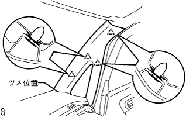

フロントサイドフィックス ウインドウASSY RH 取り付け |
| 1. フロントサイドフイツクスウインドウ脱着時の注意事項 |
フロントサイドフィックスウインドウ取り付けにおいて、フロントサイドフィックスウインドウのクリップが破損している場合、破損したクリップの代わりにブチルテープを使用することで接着剤硬化中のガラス保持ができるため、フロントサイドフィックスウインドウの再使用は可能である。
| 2. フロントサイドフィックス ウインドウASSY RH清掃 |
スクレーパーなどを使用して、ガラスに残った接着剤を削り取る。(ガラス再使用時)
ガラス外周を白ガソリンで清掃する。
| 3. フロントサイドフィックス ウインドウASSY RH取り付け |
ボデー取り付け面清掃
車両側の接着剤が著しく凹凸のある場合は、ナイフなどで平滑にする。
ガラス取り付け前作業
車両側のボデー面が露出している(接着剤がのこっていない)部分に専用プライマーを塗布する。
ガラスの接着部に専用プライマーを塗布する。
破損したクリップ取り付け位置にブチルテープを貼り付ける。(ガラス再使用でクリップ破損の場合)
シーラントガンに接着剤をセットする。
ノズル先端を図のように切り取り、接着剤をビード状に塗布する。
吸引ゴムを張り付ける。
ガラス取り付け
クリップをかん合させて、ガラスを車両に取り付ける。
ガラス全面を軽く押して、完全に密着させる。
接着剤のはみ出しおよび不足をヘラで修正する。
接着剤が硬化するまで保護テープでガラスを押さえておく。(ガラス再使用でクリップ破損の場合)
| 4. 水漏れ点検および補修 |
接着剤硬化後、車両外側から水をかけ、室内に水漏れのないことを確認する。
水漏れが生じた場合は、乾燥させた後スリーセメントブラックを充てんする。
| 5. フロントピラー ガーニッシュ RH取り付け |
|  |
ガーニッシュ下部のツメを先に入れる。
全てのクリップをかん合させ、フロントピラーガーニッシュRHを取り付ける。
| 6. フロントピラー ガーニッシュ LWR RH取り付け |
 |
ツメをかん合させ、フロントピラーガーニッシュLWR RHを取り付ける。